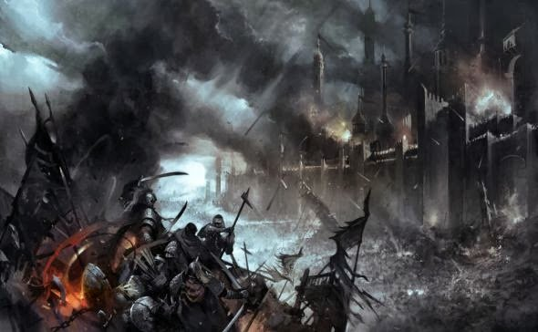

World of Ravnica
Em uma atitude de egoísmo e covardia, você fugiu, e abandonou a cidade que necessitava de você. Você deixou as pessoas na mira de
Ashiok
, a cidade está em chamas, centenas de mortos e a culpa é inteiramente sua.
Você pelo menos se recordar de quais são os valores de um Boros?
